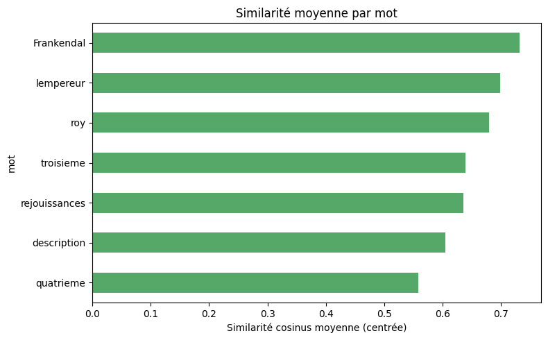
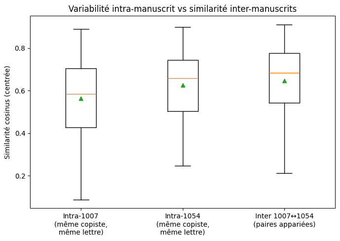
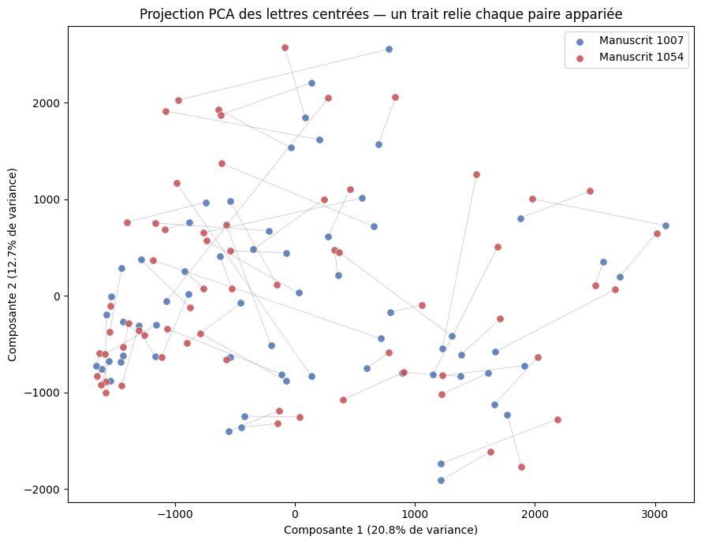
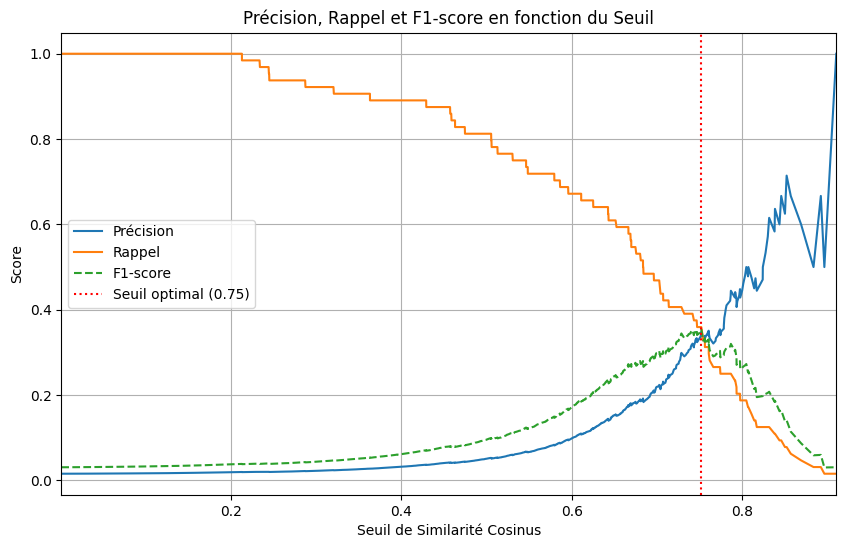

Oui Oui baguette
Experimenting shapes measurements and comparing handwritting from two different manuscripts written by the same hand
Abstract
The main idea is simple: the paleographer has the superpower of being able to say things about a manuscript just by looking at it. For example, they can identify its period, its place of origin, and sometimes even its copyist. Two or three sentences. State the question, what you measured, and the one result the figure below shows.
I have two manuscripts from the Early Modern period. One is a historical chronicle written in French by Pierre-François Barberot, while the other is a collection of literary pieces written in a mixture of French and the local dialect. There is no signature on the second manuscript, only an ex libris belonging to Pierre-François Barberot. Still, the handwriting is very similar. Therefore, the idea was to take measurements and make comparisons between the two manuscripts.
Result

This is unreadable, so please, feel free to access the link below
View the complete visual comparison table




The shapes
The full data is in All_Data.zip.
| Word (Letter) | Mss 1007 | Mss 1054 |
|---|---|---|
| Frankendal (F) |  |  |
| Description (r) |  |  |
| Frankendal (a) |  |  |
How it was made
The data comes from two manuscripts held at the Besançon Municipal Library; the first Histoire de la Franche-Comté de Bourgogne et en particulier de la cité royale de Besançon, capitale des Séquanois, composée par le R. P. Léopold Prost, de la Compagnie de Jésus, et continuée par le sr Pierre-François Barberot, avocat en Parlement, citoyen de Besançon (Ms 1007) and the second is Plusieurs dialogues, tant en françois qu'en patois, sur Besançon, receullis (sic) audit lieu l'an de grâce 1715 (Ms 1054). The idea is to compare the handwriting of the two
The first step was to segment the characters. This was done simply by taking screenshots of the digitized documents. I decided, entirely arbitrarily, to select 7 words from each manuscript,64 letters per manuscript,for a total of 128 characters. I chose the same words from each manuscript so that the cursive letters would appear in the same context.
The next step was to experiment with my data to prepare it. My friend Claude kindly wrote two short Python scripts for me. The first was for binarizing the images (converting them to black and white) because I didn't have time to do it manually. The second was for resizing them and adding padding if needed.
Finally, the last step has arrived. In a notebook, I centered and converted my images to pixel vectors before calculating the cosine similarity. Since the heatmap is unreadable, I decided to use a table to display my data. I tried different ways to analyze my data to prove my hypothesis. Finally, I wondered what the ideal threshold was for defining a good score; apparently, in this case, it’s 0.75, but to be honest, I didn’t really understand it.
There are limits, like the data sample is too small, using pixels as vectors isn't really ideal; it depends more on the letter's position in the image than on its shape etc. But still, the idea here was mostly to experiment.
The full detail lives in the README.